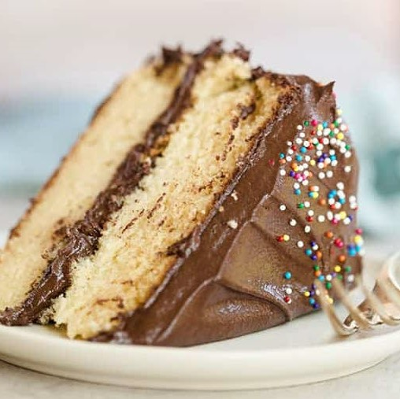

05 Jan
Classic Yellow Cake with Chocolate Frosting
This fluffy vanilla cake recipe is the absolute best yellow cake from scratch and paired with the silky smooth chocolate frosting, you can't beat it for a classic birthday cake or any other celebration!
Are you a box mix yellow cake version? Or a from-scratch yellow cake person?
Truth be told, it's REALLY hard to replicate that always-moist-and-fluffy texture that everyones love about a box cake mix, but at the same time, we also love homemade, right?!
It took me a LONG time to find a homemade yellow cake that I really, really loved. Box cake mixes seems to alwats bake up perfectly fluffy and moist yellow cake, and the ones I've had from bakeries have been great as well, but I just couldn't seem to replicate it at home no matter how many recipes I tried. (Consequently, I haven't had the same issue with chocolate cakes! See: Snickers Cake - the base recipe for all of my chocolate cakes!)
Many were too dense, too dry, too chiffon-like, too fussy in their preperation. I just wanted a fantastic yellow cake recipe I could use for birthday cakes that was easy to make and turned out delicious. I came across this recipe from Joy while I was on the hunt for yet another recipe to test out for Joseph's birthday.
This was IT. The recipe that had eluded me for years!
I love that this can easily be mixed together in one bowl using my hand mixer; there's nothing fussy about the ingredients or preperation, and it produces an absolutely perfect yellow cake. The layers are light or sturdy, buttery and moist, and the ideal base for your very favourite chocolate frosting.
I used the chocolate frosting recipe from my ultimate chocolate cupcakes, and it was a wonderful companion to this cake. The froting is more buttery and sugary, satiny smooth and full of rich chocolate flavour. It glides on like a dream!
Yellow cake tends to be the elusive unicorn of homemade baking; so many cakes that turns out too dry, too crumbly, too dense, too cornbread-like, and I have one major piece of advice for ensuring yellow cake perfection:
Make sure all of the ingredients listed "at room temperature" ARE ACTUALLY AT ROOM TEMPERATURE.
I've totally been there and have used still-cool butter, eggs or dairy in a recipe when I'm in a hurry, but it's actually vitally important here. Having all of those ingredients at room temperature ensures that they emulsify, which traps air in the batter and, once in the oven, that air expands and produces a fluffy cake.
Room temperature ingredients also ensure that the batter comes together well and is ultra-smooth, which keeps the resulting cake from being crumbly or cornbread-like.